Menu bar
P0 · done Implemented
Brand, active app, five menus, sync pill, CPU/RAM/STORAGE meters, tray and clock. Geometry within 2-3 px; icon glyphs differ.
Every surface from the Water OS demo next to the current Aether compositor. Captures are element or window crops only — no full-desktop frames.
Brand, active app, five menus, sync pill, CPU/RAM/STORAGE meters, tray and clock. Geometry within 2-3 px; icon glyphs differ.
Same 46 px items, 38 px tinted tiles, separator and running dot. The demo dock has ten tiles (adding Projects and App Studio); Aether ships eight for its own apps.
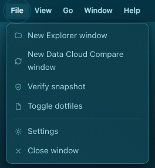

File/View/Go/Window/Help open popovers that run real commands. The Aether crop includes the bar segment above the popover.
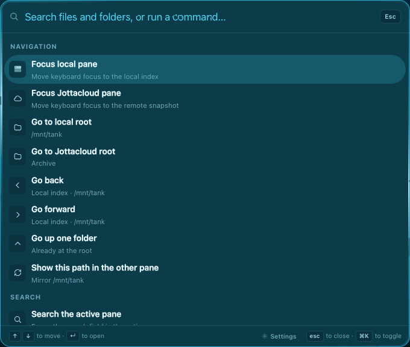
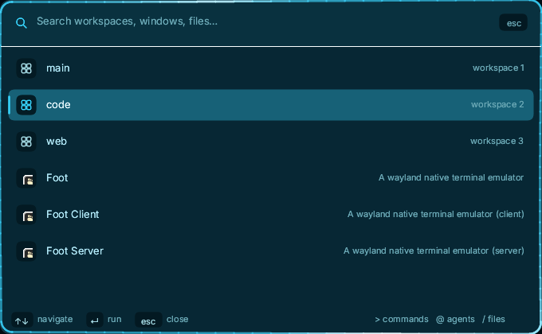
Both are ⌘K surfaces. The demo uses the explorer's command palette (groups, filters, previews); Aether uses its own providers and row language.

The product's two-pane cloud-vs-index comparator with match badges, legend and command bar. Aether has no cloud archive model.

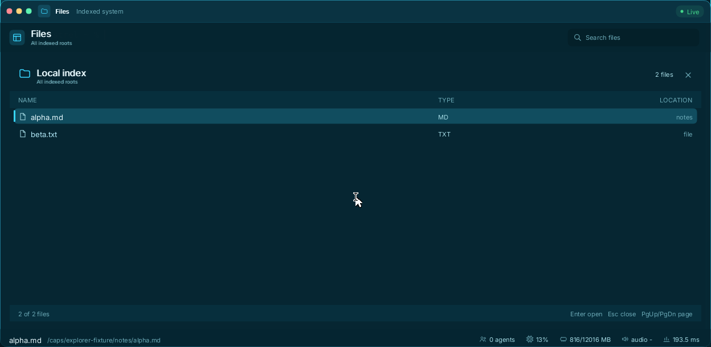
Window geometry, title bar, app bar, pane card, rows and status strip match. The demo explorer is a single-pane file browser with a breadcrumb and search row; Aether's is a single indexed pane.
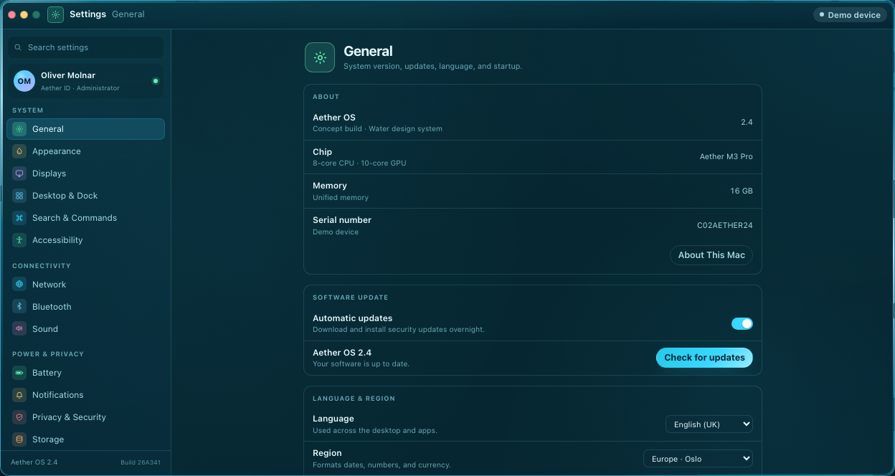
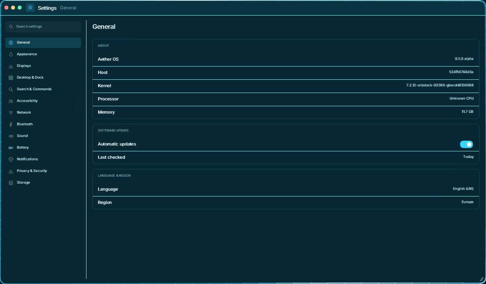
The demo Settings app is tabbed: General, Appearance, Displays, Desktop & Dock, Search, Widgets, Accessibility, Network, Bluetooth, Sound, Battery, Privacy, Screen Time and Storage. Aether only ships the Water settings panel (Themes).
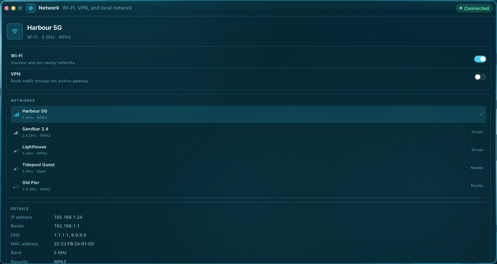
Wi-Fi, VPN and known networks. The menu bar Wi-Fi tray is a stub that logs.

Charge, health, energy mode and history. The menu bar battery item is a stub.
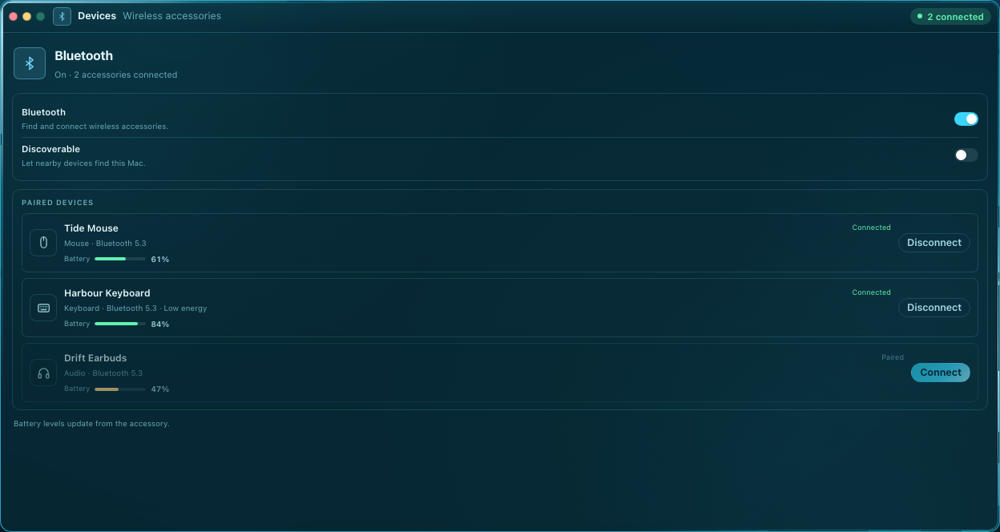
Bluetooth accessories, pairing and battery levels. The tray item is a stub.
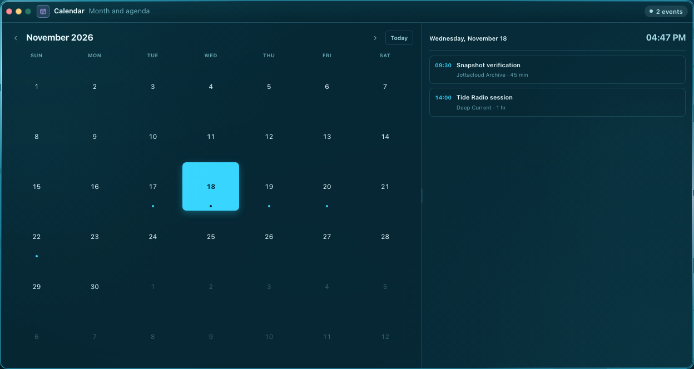
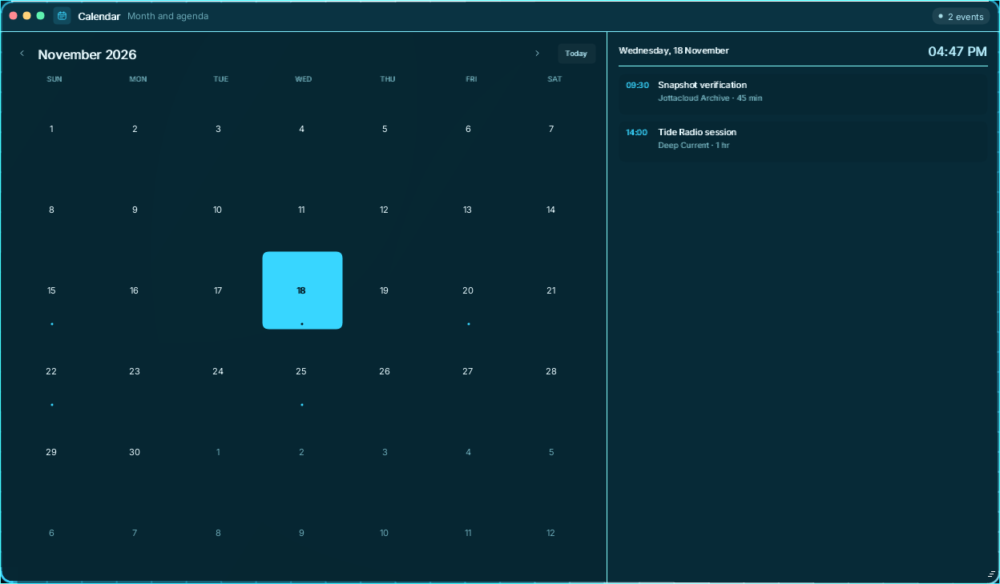
Six-row month grid, today fill, selected rim, event dots and agenda column. Keyboard navigation implemented.
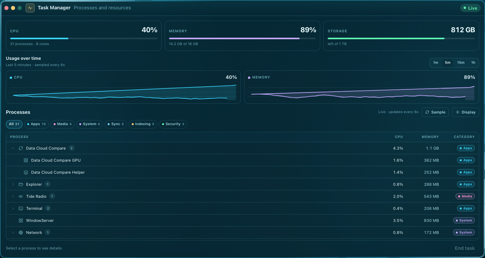

Live /proc sampling, tabs and a sorted table in both. Aether runs it as a full-width panel below the menu bar; the demo uses a floating window with its own title bar.

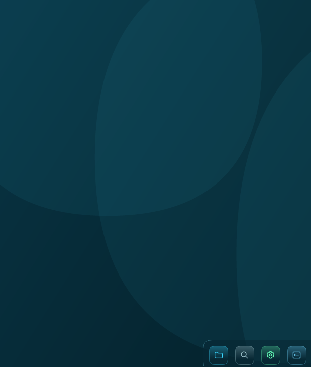
Aether hosts real Wayland clients (foot) with the compositor's Water title bar; the demo renders a mock terminal inside its own window.
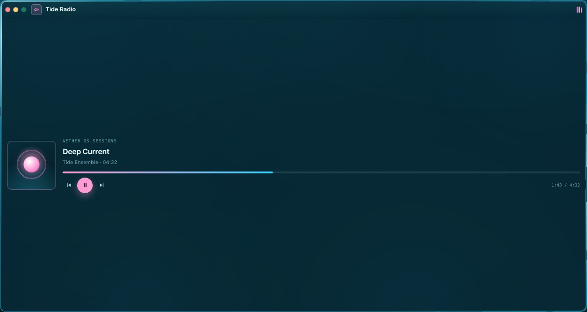
Playback, queue and presets. Aether has an audio-route overlay but no player.
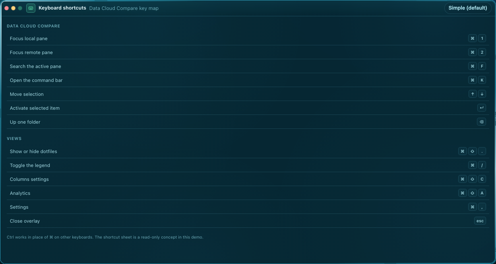

Both are Super+/ cheatsheets. The demo groups the explorer key map; Aether lists the compositor's own surfaces and window actions.
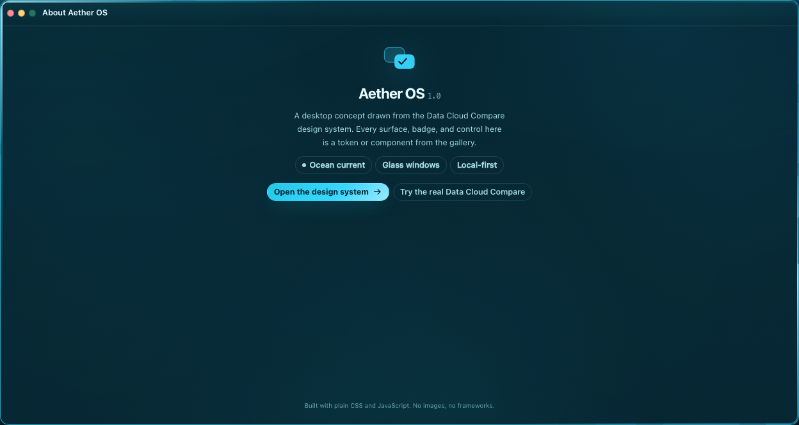
Version, build, hardware and licence. The menu-bar logo currently opens the cheatsheet.

The demo's GUI builder for app surfaces. No Aether equivalent.

Connected network, known networks, VPN state, link to Network.

Accessory list and toggle, link to Devices.
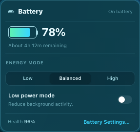
Charge figure, energy mode and time remaining.
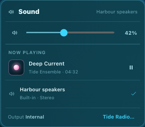
Output selection and volume. Aether's audio overlay covers the routing UI but not this tray.

The demo opens a month popover from the clock and offers Open Calendar. Aether opens the Calendar window directly.

660 x 560 overlay for outputs, inputs, presets and the input meter.

Streaming markdown with MCP tool traces.

Isolation tiers and per-agent resource use.
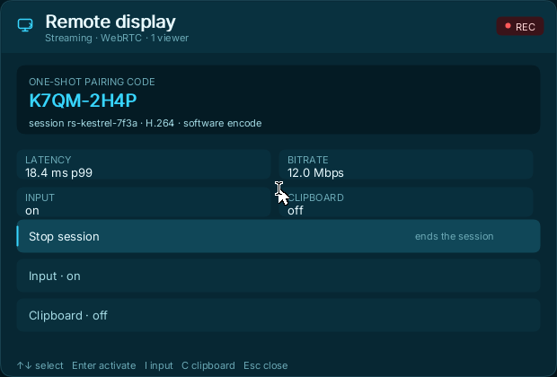
Pairing code, WebRTC transport and the recording indicator.